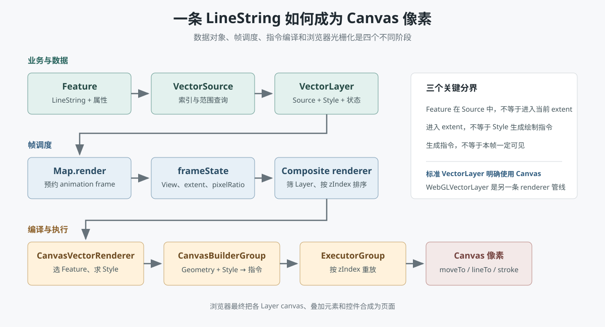

Rendering Pipeline
一个 OpenLayers Feature 如何成为屏幕像素
不再停在 Map、View、Layer、Source 四个名词。这一章沿一条红色 LineString，追踪它如何被 Source 选中、被 Style 编译成 Canvas 指令，再由浏览器光栅化成像素。
一句话总览
Feature(LineString) + VectorSource + VectorLayer + Style
-> 变更事件请求 Map.render()
-> requestAnimationFrame
-> Map.renderFrame_() 构造 frameState
-> CompositeMapRenderer.renderFrame()
-> VectorLayer.render()
-> CanvasVectorLayerRenderer.prepareFrame()
-> getFeaturesInExtent() + styleFunction()
-> CanvasBuilderGroup 生成绘制指令
-> ExecutorGroup / Executor 重放指令
-> CanvasRenderingContext2D.moveTo / lineTo / stroke
-> Canvas backing store
-> 浏览器合成地图图层与控件
-> 屏幕像素
1. 输入不是一条线，而是四类对象
const road = new Feature({
geometry: new LineString([
fromLonLat([116.30, 39.86]),
fromLonLat([116.48, 39.95])
])
});
const source = new VectorSource({ features: [road] });
const layer = new VectorLayer({
source,
style: new Style({
stroke: new Stroke({ color: "#e23b35", width: 4 })
})
});
const map = new Map({
target: "map",
layers: [layer],
view: new View({ center: fromLonLat([116.39, 39.90]), zoom: 10 })
});| 对象 | 只负责什么 | 不负责什么 |
|---|---|---|
| `Feature` | 保存 Geometry 和业务属性。 | 不决定何时重绘，也不调用 Canvas。 |
| `VectorSource` | 索引、查询、加载和管理 Feature。 | 不决定线宽和颜色。 |
| `VectorLayer` | 连接 Source、Style、可见范围、zIndex 和 renderer。 | 标准 VectorLayer 不自动切换成 WebGL。 |
| `View` | 给出 center、resolution、rotation、projection。 | 不保存业务要素。 |
2. 改了 Feature，为什么不会立即执行 stroke
OpenLayers 的 Observable 对象通过 revision 和 change 事件传播失效状态。地图、视图、图层、数据源或要素变化后，最终会请求 `Map.render()`。这个方法只在尚未预约下一帧时调用一次 `requestAnimationFrame`，把同一轮中的多次变化合并到下一帧。
road.getGeometry().setCoordinates(newCoordinates)
-> Geometry.changed()
-> Feature change
-> VectorSource changefeature
-> Layer / Map 收到变化
-> map.render()
-> requestAnimationFrame(map.animationDelay_)
-> map.renderFrame_(Date.now())`map.renderSync()` 会取消已经预约的动画帧并立即进入 `renderFrame_()`，适合导出图片和调试，但频繁在业务代码中强制同步渲染会破坏合帧优化。
3. frameState 是这一帧的共同输入
`Map.renderFrame_()` 从 View、容器尺寸和设备像素比构造 `frameState`。它不是图层数据，而是所有 LayerRenderer 共享的帧上下文。
frameState = {
size,
pixelRatio,
extent,
viewState: { center, resolution, rotation, projection },
layerStatesArray,
coordinateToPixelTransform,
pixelToCoordinateTransform,
tileQueue,
time,
animate
}Composite renderer 随后计算地图坐标到 CSS 像素的二维仿射变换。忽略旋转时，可以先用下面的简化公式理解：
xPixel = width / 2 + (x - centerX) / resolution
yPixel = height / 2 - (y - centerY) / resolution例如视口是 800 × 600，中心 `[100, 200]`，resolution 是每像素 2 个地图单位。坐标 `[120, 180]` 会落到 `[410, 310]`：向东 20 个地图单位就是向右 10 像素；向南 20 个地图单位就是向下 10 像素。实际矩阵还会处理 rotation，LayerRenderer 的 Canvas 变换还会乘以 pixelRatio。
4. Composite renderer 决定哪些 Layer 参加
Map.renderFrame_(time)
-> renderer_.renderFrame(frameState)
-> CompositeMapRenderer.calculateMatrices2D(frameState)
-> layerStatesArray 按 zIndex 排序
-> 检查 visible / resolution / zoom / extent / source state
-> layer.render(frameState, previousElement)这一层解决的是“整个图层能否进入本帧”。即使 Feature、Source 和 Style 都正确，只要 Layer 超出 min/max resolution、被隐藏或 Source 尚未 ready，后面的 Feature 筛选就不会发生。
5. 标准 VectorLayer 明确走 Canvas
当前源码中 `VectorLayer.createRenderer()` 直接返回 `CanvasVectorLayerRenderer`。因此“OpenLayers 根据数据量自动选择 Canvas 或 WebGL”是不准确的。应用选择的 Layer 类基本决定了渲染器：
new VectorLayer(...)
-> VectorLayer.createRenderer()
-> new CanvasVectorLayerRenderer(this)
new WebGLVectorLayer(...)
-> WebGLVectorLayer.createRenderer()
-> new WebGLVectorLayerRenderer(this, options)后面先追踪最常见的 Canvas VectorLayer；WebGL 分支在第 10 节单独说明。
6. prepareFrame：先选数据，再编译样式
`Layer.render()` 先调用 renderer 的 `prepareFrame(frameState)`；返回 true 才调用 `renderFrame()`。CanvasVectorLayerRenderer 在准备阶段完成大部分 CPU 工作：
CanvasVectorLayerRenderer.prepareFrame(frameState)
-> 读取 resolution / pixelRatio / projection / renderBuffer
-> 用 viewport extent + renderBuffer 得到查询范围
-> vectorSource.loadFeatures(extent, resolution, projection)
-> vectorSource.getFeaturesInExtent(extent)
-> 按 renderOrder 排序
-> feature.getStyleFunction() || layer.getStyleFunction()
-> styleFunction(feature, resolution)
-> renderFeature(feature, style, CanvasBuilderGroup)Style function 返回 `undefined` 或空值时，Feature 仍在 Source 中，但不会生成任何绘制指令。`renderBuffer` 则把查询范围扩展到视口外，避免大图标、粗线和文字刚到边缘时被截断。
7. Style 被编译成可重放指令
对红色 LineString，`renderFeatureInternal()` 先获取 geometry，并按当前分辨率做简化，然后通过 Geometry 类型找到 LineString renderer：
renderFeatureInternal(...)
-> style.getGeometryFunction()(feature)
-> geometry.simplifyTransformed(tolerance, transform)
-> GEOMETRY_RENDERERS["LineString"]
-> builderGroup.getBuilder(zIndex, "LineString")
-> CanvasLineStringBuilder.setFillStrokeStyle(null, stroke)
-> CanvasLineStringBuilder.drawLineString(...)
-> 生成指令：
BEGIN_GEOMETRY
SET_STROKE_STYLE
BEGIN_PATH
MOVE_TO_LINE_TO
STROKE
END_GEOMETRY这里的 Builder 类似一个小型编译器：输入是 Geometry + Style，输出是按 zIndex 和图形类型分组的紧凑指令及坐标数组。源码中仍常用 `replayGroup` 这个历史变量名，但当前具体类型是 `CanvasBuilderGroup`。
CanvasBuilderGroup.finish()
-> serializable instruction groups
-> new ExecutorGroup(extent, resolution, pixelRatio, instructions)
-> 为每种 zIndex / BuilderType 创建 Executor8. renderFrame：重放指令到 Canvas
CanvasVectorLayerRenderer.renderFrame(frameState)
-> prepareContainer()
-> preRender()
-> renderWorlds(executorGroup, frameState)
-> getRenderTransform(center, resolution, rotation, pixelRatio, size)
-> executorGroup.execute(context, size, transform, rotation, ...)
-> Executor.execute_()
-> transform2D(mapCoordinates, canvasCoordinates)
-> context.strokeStyle / lineWidth
-> context.beginPath()
-> context.moveTo()
-> context.lineTo()
-> context.stroke()
-> postRender()`context.stroke()` 才让浏览器 Canvas 2D 实现把路径光栅化到 canvas backing store。高分屏上 backing store 通常按 devicePixelRatio 放大，CSS 再把它显示为布局尺寸，因此 4 CSS 像素宽的线可能占 8 个物理像素。
9. 为什么平移时不一定重建全部指令
prepareFrame 会比较 resolution、pixelRatio、Layer revision、renderOrder、declutter 状态和已渲染 extent。条件未变且旧范围覆盖新范围时，可以复用 ExecutorGroup，只改变 Canvas transform 来平移已有指令。
| 变化 | 通常结果 | 原因 |
|---|---|---|
| 视口在已准备 extent 内小幅平移 | 可能复用指令 | 坐标和样式没变，只需改变变换。 |
| resolution 改变 | 重建 | 简化容差、样式函数和像素宽度可能变化。 |
| Feature geometry 或属性改变 | 重建 | Source/Layer revision 改变。 |
| Style 或 renderOrder 改变 | 重建 | 绘制指令或顺序已经不同。 |
10. WebGL 路径不是把 Canvas 指令交给 GPU
`WebGLVectorLayer` 使用独立的 `WebGLVectorLayerRenderer`。它会维护几何批次，把属性和坐标组织成顶点/索引 buffer，使用 shader program、uniform 和 WebGL draw call。它不是把 Canvas 的 `MOVE_TO_LINE_TO` 指令翻译一次后继续复用。
| 标准 VectorLayer | WebGLVectorLayer |
|---|---|
| CanvasVectorLayerRenderer | WebGLVectorLayerRenderer |
| Style 对象/函数，支持面广 | 面向 GPU 的 flat style 与表达式，支持范围不同 |
| Builder 指令 → Canvas Executor | Geometry batch → GPU buffer → shader/draw call |
| 最终 `context.stroke/fill/drawImage` | 最终 WebGL draw call |
11. 和 Cesium 的真正对应关系
| OpenLayers Canvas | Cesium | 共同抽象 |
|---|---|---|
| Feature + Style | Entity / Primitive + Appearance | 业务对象及视觉规则。 |
| frameState | frameState | 当前视图、时间和渲染环境。 |
| CanvasBuilderGroup | Primitive.update() | 把高层对象编译成低层工作描述。 |
| ExecutorGroup / Canvas instructions | commandList / DrawCommand | 统一组织、排序和执行绘制工作。 |
| CanvasRenderingContext2D | Context / WebGL | 浏览器底层图形接口。 |
源码阅读入口
- `src/ol/Map.js`：requestAnimationFrame、frameState 和总渲染入口。
- `src/ol/renderer/Map.js`：坐标与像素矩阵。
- `src/ol/renderer/Composite.js`：Layer 排序、可见性筛选和组合。
- `src/ol/layer/Vector.js`：标准 VectorLayer 选择 Canvas renderer。
- `src/ol/renderer/canvas/VectorLayer.js`：Feature 查询、Style 编译和指令执行入口。
- `src/ol/renderer/vector.js`：按 Geometry 类型选择 Builder。
- `LineStringBuilder.js` 与 `Executor.js`：从线到 Canvas API。
- `src/ol/layer/WebGLVector.js`：显式 WebGL VectorLayer 入口。
源码复核：OpenLayers `main` 10.10.1-dev｜最后复核：2026-09-14。带下划线的私有方法和 renderer 内部结构不是稳定公共 API，升级后应重新核对。